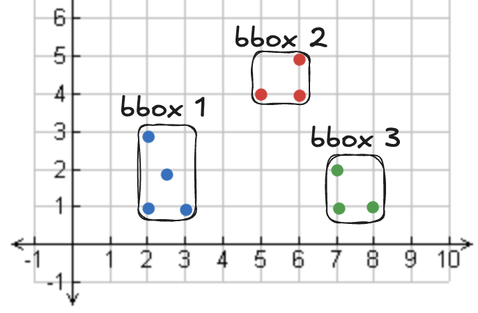
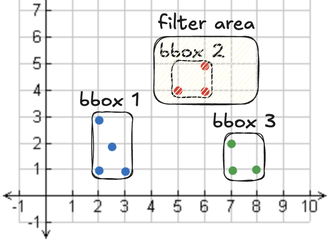

在 Spark 上使用 Apache Sedona 处理 GeoParquet¶
本页介绍如何使用 Apache Sedona 与 GeoParquet 构建空间数据湖。
GeoParquet 在空间数据集场景下具有诸多优势：
- 内置对几何列的支持
- GeoParquet 是列式存储，支持列裁剪，仅使用部分列的查询会更快
- 内嵌统计信息让某些查询能够直接跳过整块文件内容
- 为每个 row group 存储边界框（“bbox”）元数据，可进行 row-group 级过滤
- 列式格式利于压缩
- 与 GeoJSON 或 CSV 不同，GeoParquet 在文件尾部携带 schema，无需推断或手动指定
下面看如何把 Sedona DataFrame 写成 GeoParquet 文件。
使用 Spark 把 Sedona DataFrame 写为 GeoParquet¶
先创建一个 Sedona DataFrame：
df = sedona.createDataFrame(
[
("a", "LINESTRING(2.0 5.0,6.0 1.0)"),
("b", "LINESTRING(7.0 4.0,9.0 2.0)"),
("c", "LINESTRING(1.0 3.0,3.0 1.0)"),
],
["id", "geometry"],
)
df = df.withColumn("geometry", ST_GeomFromText(col("geometry")))
将 DataFrame 写成 GeoParquet 文件：
df.write.format("geoparquet").mode("overwrite").save("/tmp/somewhere")
写出的文件如下：
somewhere/
_SUCCESS
part-00000-1c13be9e-6d4c-401e-89d8-739000ad3aba-c000.snappy.parquet
part-00003-1c13be9e-6d4c-401e-89d8-739000ad3aba-c000.snappy.parquet
part-00007-1c13be9e-6d4c-401e-89d8-739000ad3aba-c000.snappy.parquet
part-00011-1c13be9e-6d4c-401e-89d8-739000ad3aba-c000.snappy.parquet
Sedona 会并行写出多个 Parquet 文件，比写单一文件快得多。
写出 GeoParquet 时，Sedona 会保留空 Point、LineString 和 Polygon 几何对象声明的 XY 或 XYZ 坐标布局。即使 Z 坐标值为 NaN，XYZ 几何对象也会保留 Z 维度。
Sedona 按 GeoParquet 规范的要求，用 ISO WKB 的类型代码写出 Z 维度：带 Z 坐标的几何对象使用 1001 到 1007 的类型代码，例如 Point Z 为 1001。Sedona 2.0.0 之前的写出方式是用 EWKB 标志位标记 Z（Point Z 为 0x80000001）。两种形式 Sedona 都能读取。
几何集合的每个成员保留各自的坐标布局。同时包含 XY 和 XYZ 成员的集合会按两种类型代码存储，例如集合为 1007，XY 的 LineString 成员为 2，Point Z 成员为 1001。ISO WKB 要求带 Z 坐标的集合中每个成员也带 Z 坐标，因此读取方可能拒绝这样的几何对象。Spark 原生几何类型就是如此：在 Spark 4.2 及更高版本上，Sedona 将其读入原生几何列时会失败并报 WKB_PARSE_ERROR。
GeoParquet 1.1 不支持 M 坐标。Sedona 在写出 GeoParquet 1.1 时会丢弃 M：XYM 转换为 XY，XYZM 转换为 XYZ。如果需要保留 M 值，请在写出前将其单独存储，或者写出 GeoParquet 2.0，它会保留 M 坐标。详见下文写出 GeoParquet 2.0 一节。
使用 Spark 将 GeoParquet 读入 Sedona DataFrame¶
将 GeoParquet 文件读入 Sedona DataFrame：
df = sedona.read.format("geoparquet").load("/tmp/somewhere")
df.show(truncate=False)
结果如下：
+---+---------------------+
|id |geometry |
+---+---------------------+
|a |LINESTRING (2 5, 6 1)|
|b |LINESTRING (7 4, 9 2)|
|c |LINESTRING (1 3, 3 1)|
+---+---------------------+
自 Sedona 2.0.0 起，读取时会保留声明的 Z/M 维度，即使点、线或多边形为空，或坐标值为 NaN。这也适用于包含 M 坐标的 WKB 输入，但此类输入不符合 GeoParquet 1.1 规范。如果收集不同坐标布局的几何对象时出现布局不一致的错误，请参阅 ST_Collect。
Sedona 在底层执行该查询的过程大致如下：
- 从 GeoParquet 文件尾部读取 schema，因此无需 schema 推断。
- 收集每个文件的 bbox 元数据，判断哪些数据可以被跳过。
- 执行查询时跳过未使用的列。
得益于此，Sedona 在 GeoParquet 上的查询通常比在 CSV 等格式上更快、更稳定。CSV 既不在文件尾部存 schema，也不支持列裁剪，更没有用于数据跳过的 row-group 元数据。
读取 GeoParquet 2.0 文件和 Parquet 地理空间类型¶
GeoParquet 2.0 使用 Parquet 格式的 GEOMETRY 或 GEOGRAPHY 逻辑类型存储每个几何列。自 Sedona 2.0.0 起，在 Spark 4.1 及更高版本上，geoparquet 读取器会把 GEOMETRY 列读取为几何对象，无论文件是否带有 GeoParquet 元数据。因此，其他引擎只用 Parquet 逻辑类型写出的文件也可以用同样的方式加载：
df = sedona.read.format("geoparquet").load("/tmp/written-by-another-engine")
每个几何对象的 SRID 来自逻辑类型的 crs 属性：
列的 crs 属性 |
SRID |
|---|---|
| 未设置 | 4326（Parquet 的默认值 OGC:CRS84） |
EPSG:<code> |
该代码 |
OGC:CRS84 |
4326 |
其他机构的 <authority>:<code>，例如 ESRI:102100 |
在 Spark 4.2 及更高版本上为 Spark 赋予它的 SRID（此处为 102100）；在 Spark 4.1 上为 0 |
srid:<identifier> |
该标识符，其中 srid:0 表示 CRS 未知 |
| 内联 PROJJSON | 按上述规则由其 id 得到的 SRID |
projjson:<key> |
文件元数据中该键下 PROJJSON 的 id 对应的 SRID |
Spark 4.2 自带 EPSG 和 ESRI 坐标参考系的注册表，对于 EPSG 以外的机构，Sedona 会查询该注册表。Spark 4.1 没有这样的注册表。这类标识符的代码不会被直接当作 SRID，因为 SRID 代表 EPSG 代码，而其他机构可能用同一个数字表示不同的坐标系：ESRI:4812 不是 EPSG:4812，因此在任何 Spark 版本上都不会得到 SRID。projjson:<key> 中的 <key> 按原样查找，不做任何修改。
如果 CRS 无法给出 SRID，则使用 GeoParquet 元数据中的 crs。如果它也无法给出，SRID 为 0。
在 Spark 4.2 及更高版本上，Sedona 会推断出 Spark 原生几何类型，而这种类型必须指明 SRID。因此，读取 CRS 无法给出 SRID 的列时，Sedona 在推断 schema 的阶段就会失败，并提示该 CRS 无法用 Spark 原生 SRID 表示。要读取这样的列，请为读取器提供一个 schema，并在其中为该列使用 Sedona 自己的几何类型，在 Python 中是 LegacyGeometryType，在 Scala 和 Java 中是 GeometryUDT。读出的几何对象 SRID 为 0：
from pyspark.sql.types import StructField, StructType
from sedona.spark.sql.types import LegacyGeometryType
schema = StructType([StructField("geometry", LegacyGeometryType())])
df = sedona.read.schema(schema).format("geoparquet").load("/tmp/somewhere")
Sedona 的函数，例如 ST_AsText 和 ST_Buffer，可以处理这样的列。Spark 内置的函数，例如 Spark 4.2 上的 ST_SRID 和 ST_AsBinary，只接受原生几何列。
GEOGRAPHY 列会被读取为地理列：在 Spark 4.1 上是 Sedona 的地理类型，在 Spark 4.2 及更高版本上是 Spark 原生地理类型。SRID 按上述规则取自 crs 属性，因此没有该属性的列 SRID 为 4326，使用其他地理坐标系（例如 NAD83，即 EPSG:4269）的列 SRID 为该坐标系的 SRID。
有三类 GEOGRAPHY 列需要您提供 schema。
第一类是边的插值算法不是 spherical 的列，即 vincenty、thomas、andoyer 或 karney。Sedona 在球面上计算，因此会拒绝这样的列。在 schema 中把该列声明为二进制类型，即可读出它的 WKB：
from pyspark.sql.types import BinaryType, StructField, StructType
schema = StructType([StructField("geography", BinaryType())])
df = sedona.read.schema(schema).format("geoparquet").load("/tmp/somewhere")
第二类是在 Spark 4.2 及更高版本上，CRS 未知或不是地理坐标系的列。Spark 原生地理类型无法表示这样的 CRS。在 schema 中为该列使用 Sedona 自己的地理类型即可读取，在 Python 中是 LegacyGeographyType，在 Scala 和 Java 中是 GeographyUDT：
from pyspark.sql.types import StructField, StructType
from sedona.spark.sql.types import LegacyGeographyType
schema = StructType([StructField("geography", LegacyGeographyType())])
df = sedona.read.schema(schema).format("geoparquet").load("/tmp/somewhere")
第三类是在 Spark 4.2 及更高版本上，各文件声明的 SRID 不一致的列。Spark 原生地理类型的一列只有一个 SRID，因此 Sedona 会在扫描文件之前拒绝读取。在 schema 中为该列使用 GEOGRAPHY(ANY) 类型即可读取这些文件，每个地理对象保留其所在文件的 SRID：
df = (
sedona.read.schema("geography GEOGRAPHY(ANY)")
.format("geoparquet")
.load("/tmp/somewhere")
)
GEOGRAPHY 列不会被读取为几何列。如果 schema 为它指定几何类型，Sedona 会拒绝读取；如果同一列在一部分文件中是几何列、在另一部分文件中是 GEOGRAPHY 列，Sedona 也会拒绝读取。这既适用于 GEOMETRY 列，也适用于 GeoParquet 1.x 文件中的几何列。
因上述原因被 Sedona 拒绝的文件并不是损坏的文件。即使设置了 ignoreCorruptFiles 选项，读取也会失败，而不会跳过该文件。
同一数据集中的文件不必以相同的方式存储地理列。某个文件的该列中没有任何地理对象时，无论它自身声明了什么 CRS，都采用其他含有地理对象的文件的 CRS。如果某个文件把该列按 Sedona 自有的地理类型存储（GeoParquet 1.1 写入就是如此），它也可以与含有 GEOGRAPHY 列的文件一起读取。在 Spark 4.2 及更高版本上，这类文件中没有 SRID 的地理对象的 SRID 为 4326。
对地理列的过滤条件，Sedona 会逐行计算，不会使用文件的边界框，因为这些边界框是平面的。
Spark 3.5 和 4.0 自带的 Parquet 库早于这些逻辑类型，无法打开此类文件。
检查 GeoParquet 元数据¶
自 v1.5.1 起，Sedona 提供了一个 Spark SQL 数据源 "geoparquet.metadata"，可用于检查 GeoParquet 元数据。返回的 DataFrame 中包含每个输入文件的 “geo” 元数据。
val df = sedona.read.format("geoparquet.metadata").load(geoparquetdatalocation1)
df.printSchema()
Dataset<Row> df = sedona.read.format("geoparquet.metadata").load(geoparquetdatalocation1)
df.printSchema()
df = sedona.read.format("geoparquet.metadata").load(geoparquetdatalocation1)
df.printSchema()
输出如下：
root
|-- path: string (nullable = true)
|-- version: string (nullable = true)
|-- primary_column: string (nullable = true)
|-- columns: map (nullable = true)
| |-- key: string
| |-- value: struct (valueContainsNull = true)
| | |-- encoding: string (nullable = true)
| | |-- geometry_types: array (nullable = true)
| | | |-- element: string (containsNull = true)
| | |-- bbox: array (nullable = true)
| | | |-- element: double (containsNull = true)
| | |-- crs: string (nullable = true)
GeoParquet 文件尾部为每一列存储以下数据：
- geometry_type：几何对象的类型，如点、多边形等
- bbox：文件中对象的边界框
- crs：坐标参考系
- covering：包含 xmin、ymin、xmax、ymax 的结构体列，用于 GeoParquet 1.1 文件的 row group 统计信息
其他 Parquet 元数据存储在 Parquet 文件尾部，与普通 Parquet 文件保持一致。
如果输入的 Parquet 文件没有 GeoParquet 元数据，返回 DataFrame 中的 version、primary_column 与 columns 字段会为 null。
geoparquet.metadata 仅支持读取 GeoParquet 特有的元数据。如果需要读取通用 Parquet 文件的全部元数据，可以使用 G-Research/spark-extension。
我们来查看一下元数据的内容与 schema：
df.show(truncate=False)
+-----------------------------+-------------------------------------------------------------------+
|path |columns |
+-----------------------------+-------------------------------------------------------------------+
|file:/part-00003-1c13.parquet|{geometry -> {WKB, [LineString], [2.0, 1.0, 6.0, 5.0], null, NULL}}|
|file:/part-00007-1c13.parquet|{geometry -> {WKB, [LineString], [7.0, 2.0, 9.0, 4.0], null, NULL}}|
|file:/part-00011-1c13.parquet|{geometry -> {WKB, [LineString], [1.0, 1.0, 3.0, 3.0], null, NULL}}|
|file:/part-00000-1c13.parquet|{geometry -> {WKB, [], [0.0, 0.0, 0.0, 0.0], null, NULL}} |
+-----------------------------+-------------------------------------------------------------------+
columns 列保存了 GeoParquet 数据湖中各文件的边界框信息，可用于跳过整个文件或 row group。下文还会进一步介绍如何利用 bbox 元数据。
写出带 CRS 元数据的 GeoParquet¶
自 v1.5.1 起，Sedona 支持以自定义的 GeoParquet 规范版本与 CRS 写出 GeoParquet 文件。默认的 GeoParquet 规范版本为 1.1.0（自 v1.9.0 起），默认 CRS 为 null。可按以下方式指定：
val projjson = "{...}" // 所有几何列共享的 PROJJSON 字符串
df.write.format("geoparquet")
.option("geoparquet.version", "1.0.0")
.option("geoparquet.crs", projjson)
.save(geoparquetoutputlocation + "/GeoParquet_File_Name.parquet")
如果 GeoParquet 文件中存在多个几何列，可以为每个列分别指定 CRS。例如 df 中有两列几何列 g0 与 g1，希望分别指定它们的 CRS：
val projjson_g0 = "{...}" // g0 的 PROJJSON 字符串
val projjson_g1 = "{...}" // g1 的 PROJJSON 字符串
df.write.format("geoparquet")
.option("geoparquet.version", "1.0.0")
.option("geoparquet.crs.g0", projjson_g0)
.option("geoparquet.crs.g1", projjson_g1)
.save(geoparquetoutputlocation + "/GeoParquet_File_Name.parquet")
geoparquet.crs 与 geoparquet.crs.<column_name> 可取以下值：
"null"：显式将crs字段置为null，这是几何 SRID 为 0 时的默认行为。""（空字符串）：省略crs字段。对于支持 CRS 的实现而言，意味着使用 OGC:CRS84。"{...}"（PROJJSON 字符串）：crs字段会被设为表示该几何坐标参考系的 PROJJSON 对象。可在 https://epsg.io/ （页面底部点击 JSON 选项）查找特定 CRS 的 PROJJSON，也可以根据需要自定义 PROJJSON。
GeoParquet 写出操作的全部选项见参数。
通过 SRID 自动推断 CRS¶
未显式提供 geoparquet.crs 选项时，Sedona 会根据几何列的 SRID 自动推导出 CRS PROJJSON。例如，如果某列所有几何对象的 SRID 都是 32632（通过 ST_SetSRID 设置），写入器会自动在 GeoParquet 元数据中生成 EPSG:32632 对应的 PROJJSON。当 SRID 为 4326 时，由于这就是 GeoParquet 的默认 CRS（OGC:CRS84），crs 字段会被省略。
- 若 SRID 为 0（未显式设置 SRID 的几何对象的默认值），
crs字段会被设为null。 - 若同一列中的几何对象 SRID 不一致，
crs字段默认置为null。 - 若显式提供了
geoparquet.crs或geoparquet.crs.<column_name>选项，则始终优先于 SRID 推导出的 CRS。
在 Spark 4.2 及更高版本上，原生几何列在列类型中指明 SRID，针对这种列的 CRS 选项必须与之一致。这对所有 GeoParquet 版本都适用：
- CRS 的标识符，即 PROJJSON 中的
id或ids中的某一项，必须给出该列的 SRID。 - 该标识符不能指明其注册库的版本。SRID 代表该代码当前的含义，而同一代码在另一个版本中可能表示另一个 CRS，因此 Sedona 会拒绝这样的选项。
- Sedona 只比较标识符，定义的其余部分按给定内容写出。请确认该定义描述的就是坐标所在的 CRS。
GeoParquet 以 (x, y) 顺序存储 WKB 坐标。根据 GeoParquet 1.1 规范，此顺序会覆盖 CRS
中声明的坐标轴顺序。因此，Sedona 会保留权威的 CRS 坐标轴元数据，并且在读写 GeoParquet
时不会重新排列几何坐标。如果坐标本身需要交换，可以使用
ST_FlipCoordinates。
写出 GeoParquet 2.0¶
GeoParquet 2.0 使用 Parquet 格式的 GEOMETRY 逻辑类型存储每个几何列。自 Sedona 2.0.0 起，在 Spark 4.1 及更高版本上，把 geoparquet.version 设为 2.0.0 即可写出这样的文件。默认版本为 1.1.0。
df.write.format("geoparquet").option("geoparquet.version", "2.0.0").save(
"/tmp/somewhere"
)
GeoParquet 2.0 文件与 GeoParquet 1.1 文件有以下区别：
- 几何列带有
GEOMETRY逻辑类型，CRS 是该类型的一个属性。GeoParquet 元数据会以 PROJJSON 重复给出 CRS。 - 每个行组都带有地理空间统计信息，即边界框和几何类型，由 Parquet 库写出。因此 Sedona 默认不再添加 covering 列。
geoparquet.covering和geoparquet.covering.<column_name>仍可声明由你提供的 covering 列。 - M 坐标会被保留：XYM 和 XYZM 几何对象按原样存储。GeoParquet 元数据中的
geometry_types会标明坐标布局，例如Point M或LineString ZM。 - GeoParquet 元数据中的
bbox还会给出 Z 和 M 坐标的范围。含 Z 坐标的列有六个值[xmin, ymin, zmin, xmax, ymax, zmax]，同时含 Z 和 M 坐标的列有八个值[xmin, ymin, zmin, mmin, xmax, ymax, zmax, mmax]。只含 M 而不含 Z 坐标的列只给出 X 和 Y 的范围，因为 GeoParquet 的bbox无法在没有 Z 范围时表示 M 范围。为 NaN 的 Z 或 M 坐标不计入范围；如果某一维的坐标全部为 NaN，则视为该列没有这一维，因此数组可能比几何的坐标维度所对应的更短。如果要写出的某个范围值为无穷大或 NaN，Sedona 不会为该列写出bbox，因为 JSON 无法用数字表示这样的值。GeoParquet 1.1 文件仍只写出 X 和 Y 范围的四个值。
Sedona 会用能够标识 CRS 的最短形式写出列的 crs 属性：
| 列的 CRS | 列的 crs 属性 |
GeoParquet 元数据中的 crs |
|---|---|---|
| OGC:CRS84（SRID 4326） | 不设置 | 不设置 |
| 带标识符的 CRS，例如 EPSG:3857 | EPSG:3857 |
PROJJSON |
| 不带标识符的 CRS | 内联 PROJJSON | PROJJSON |
标识符带有注册表版本的 CRS，例如 IAU 的 2015 版 |
内联 PROJJSON | PROJJSON |
| 未知（SRID 0） | srid:0 |
null |
在 Spark 4.2 及更高版本上，CRS 来自列类型的 SRID。
Sedona 的 geoparquet 读取器会把 GeoParquet 2.0 文件的几何列读取为几何列。例外是在 Spark 4.2 及更高版本上，CRS 无法给出 SRID 的列，例如没有标识符的 PROJJSON。Sedona 无法为它推断出原生几何类型，因此读取会失败，除非你提供一个使用 Sedona 自己的几何类型的 schema，做法见读取 GeoParquet 2.0 文件一节。Spark 自带的 Parquet 读取器 spark.read.parquet 在 Spark 4.2 上返回什么，取决于写出文件时的列类型。对于原生几何列，它返回原生几何列。对于 GeometryUDT 列（在 Spark 4.1 上写出的几何列都是这种类型），它以二进制列返回 WKB，与读取 GeoParquet 1.1 文件时相同。
在 Spark 4.1 上，SRID 属于每个几何对象而不属于列，而 GeoParquet 2.0 的一列只有一个 CRS。Sedona 取每个文件中该列第一个几何对象的 SRID 作为列的 CRS；如果同一文件中另一个几何对象的 SRID 不同，写出会失败。SRID 为 0 的列，或在文件中没有任何几何对象的列，会以未知 CRS 写出。
Sedona 必须在写出第一行之前知道 CRS，因此会把第一个几何对象之前的行暂存在内存中，每个文件最多 16 MB。geoparquet.srid.lookahead.bytes 可以修改这一上限。到达上限时仍未出现几何对象的列会以未知 CRS 写出，之后如果出现带 SRID 的几何对象，写出会失败。
设置 geoparquet.crs 或 geoparquet.crs.<column_name> 可以自行指定 CRS。此时 Sedona 按给定值写出，不再与几何对象的 SRID 比较。
地理列以 WKB 存入边为球面（spherical）的 GEOGRAPHY 逻辑类型，GeoParquet 元数据中该列带有 "edges": "spherical"。文件可以只有地理列而没有几何列。Sedona 不为地理列写出 bbox，因为 GeoParquet 元数据中的 bbox 是平面的。
地理列的 CRS 遵循几何列的规则，geoparquet.crs 和 geoparquet.crs.<column_name> 同样适用。在 Spark 4.1 上有一点不同：没有 SRID 的地理对象按 OGC:CRS84 写出，文件中没有任何地理对象的列也是如此。
GEOGRAPHY 逻辑类型要求使用地理 CRS，经度范围为 -180 到 180，纬度范围为 -90 到 90。Spark 4.1 上 Sedona 自有的地理类型接受任意 SRID 和任意坐标，因此如果地理列的 CRS 是投影 CRS，或者某个地理对象超出上述范围，写入会失败。
GeoParquet 1.1 文件没有地理类型。在 Spark 4.1 及更早版本上，Sedona 会把自己的地理类型的列以只有 Sedona 能读回的形式存入这样的文件。在 Spark 4.2 及更高版本上，把 Spark 原生地理类型的列写入 GeoParquet 1.1 文件会失败，请为此把 geoparquet.version 设为 2.0.0。
Spark 3.5 和 4.0 自带的 Parquet 库早于 GEOMETRY 逻辑类型。Sedona 在这些版本上写出 GeoParquet 1.1，并拒绝把 geoparquet.version 设为 2.0.0。
写出带 covering 元数据的 GeoParquet¶
自 v1.6.1 起，Sedona 支持向几何列元数据写入 covering 字段。该字段指定一列边界框列以加速空间数据检索。该边界框列必须是顶层结构体列，包含 xmin、ymin、xmax、ymax 四个子列。如果待写入的 DataFrame 已经包含这样的列，可通过 .option("geoparquet.covering.<geometryColumnName>", "<coveringColumnName>") 选项把 covering 元数据写入 GeoParquet：
df.write.format("geoparquet")
.option("geoparquet.covering.geometry", "bbox")
.save("/path/to/saved_geoparquet.parquet")
如果 DataFrame 仅有一列几何列，可以省略列名直接使用 geoparquet.covering：
df.write.format("geoparquet")
.option("geoparquet.covering", "bbox")
.save("/path/to/saved_geoparquet.parquet")
如果未设置 geoparquet.covering 选项，Sedona 在写出 GeoParquet 1.1.0 时会自动为您填充 covering 元数据。
对每个几何列，Sedona 会使用 <geometryColumnName>_bbox 作为 covering 列：
- 如果
<geometryColumnName>_bbox已存在且是合法的 covering 结构体（xmin、ymin、xmax、ymax），Sedona 会复用它。 - 如果
<geometryColumnName>_bbox不存在，Sedona 会在写出时自动生成。
显式的 geoparquet.covering 或 geoparquet.covering.<geometryColumnName> 选项始终优先于上述默认行为。
可以通过 geoparquet.covering.mode 控制该默认行为：
auto（默认）：在写 GeoParquet1.1.0时启用 covering 元数据/列的自动生成。legacy：禁用自动 covering 生成。
df.write.format("geoparquet")
.option("geoparquet.covering.mode", "legacy")
.save("/path/to/saved_geoparquet.parquet")
如果 DataFrame 中没有 covering 列，可以使用 Sedona 的 SQL 函数构造一个：
val df_bbox = df.withColumn("bbox", expr("struct(ST_XMin(geometry) AS xmin, ST_YMin(geometry) AS ymin, ST_XMax(geometry) AS xmax, ST_YMax(geometry) AS ymax)"))
df_bbox.write.format("geoparquet").option("geoparquet.covering.geometry", "bbox").save("/path/to/saved_geoparquet.parquet")
排序后再写出 GeoParquet¶
为了最大程度地发挥 Sedona GeoParquet filter pushdown 的性能，建议先按几何对象的 geohash 值（参见 ST_GeoHash）排序，再写出 GeoParquet。示例如下：
SELECT col1, col2, geom, ST_GeoHash(geom, 5) as geohash
FROM spatialDf
ORDER BY geohash
接下来更深入地看看 Sedona 是如何利用 GeoParquet 的 bbox 元数据来优化查询的。
Sedona 如何在 Spark 上利用 GeoParquet 边界框（bbox）元数据¶
bbox 元数据描述了某个文件中所包含几何对象覆盖的范围。如果查询的区域不与某个文件的边界框相交，引擎在执行查询时即可整体跳过该文件——因为它不可能包含相关数据。
跳过整个文件可以极大提升性能，跳过的数据越多，查询就越快。
下面来看一个由若干点和三个边界框组成的数据集示例：

应用一个空间过滤器，只读取某个区域内的点：

查询代码：
my_shape = "POLYGON((4.0 3.5, 4.0 6.0, 8.0 6.0, 8.0 4.5, 4.0 3.5))"
res = sedona.sql(f"""
select *
from points
where st_intersects(geometry, ST_GeomFromWKT('{my_shape}'))
""")
res.show(truncate=False)
结果如下：
+---+-----------+
|id |geometry |
+---+-----------+
|e |POINT (5 4)|
|f |POINT (6 4)|
|g |POINT (6 5)|
+---+-----------+
执行该查询其实并不需要边界框 1 或 3 中的数据，只需要边界框 2 中的点。文件跳过让我们对这个查询只需读取一个文件而非三个。该数据湖中各文件的 bbox 如下：
+--------------------------------------------------------------+
|columns |
+--------------------------------------------------------------+
|{geometry -> {WKB, [Point], [2.0, 1.0, 3.0, 3.0], null, NULL}}|
|{geometry -> {WKB, [Point], [7.0, 1.0, 8.0, 2.0], null, NULL}}|
|{geometry -> {WKB, [Point], [5.0, 4.0, 6.0, 5.0], null, NULL}}|
+--------------------------------------------------------------+
跳过整个文件能带来显著的性能收益。
GeoParquet 的优势¶
如前所述，GeoParquet 相比 CSV、GeoJSON 等行式格式有诸多优势：
- 列裁剪
- row-group 过滤
- schema 写在文件尾部
- 列式数据布局，压缩效果良好
但这些优势仍不足以满足空间数据从业者所需的全部能力。
GeoParquet 的局限¶
Parquet 与 GeoParquet 数据湖与其他数据湖一样，存在以下局限：
- 不支持可靠事务
- 不支持部分数据操作语言（DML），如 update、delete
- 没有并发保护
- 与数据库相比，某些操作性能较差
为了克服这些局限，数据社区已逐步迁移到 Iceberg、Delta Lake、Hudi 等开放式表格式。
Iceberg 最近开始支持 geometry 与 geography 列，让数据从业者既能享受开放式表格式的特性，又能复用底层的 Parquet 文件。Iceberg 解决了 GeoParquet 数据湖的局限，支持可靠事务以及 update、delete 等常见操作。
结论¶
GeoParquet 是空间数据社区的一项重要进展。它为地理工程师提供了内嵌 schema、性能优化与对几何列的原生支持。
由于 Iceberg 现已具备 GeoParquet 的全部优秀特性甚至更多，空间数据工程师也可以平滑迁移到 Iceberg。Iceberg 提供了大量实用的开放式表格式特性，几乎在所有场景下都优于纯 GeoParquet（例外情况：永不变更的单文件数据集，或与其他引擎的兼容性需求）。
将工作流从 Shapefile、GeoPackage、CSV、GeoJSON 等传统格式迁移到 GeoParquet/Iceberg 等高性能格式，能立刻提升计算效率。